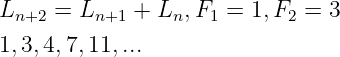
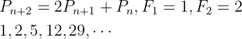
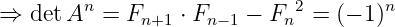
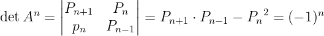
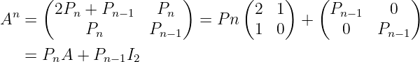
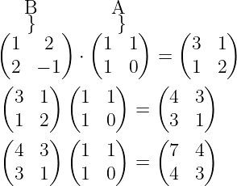
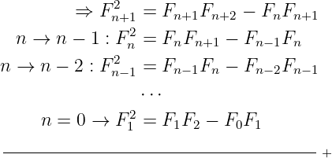
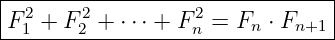
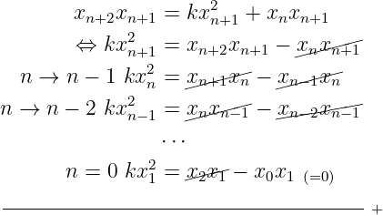
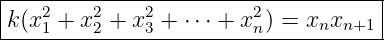

Observaţia 1.







Dacă k = 2 ⇒ xn = Pn (șirul lui Pelle), și:2(P12 + P 22 + P 32 + + P n2) = P nPn+1
...
Mai jos

![Fn+2 = Fn+1 + Fn,F1 = 1,F2 = 1
Fn+2 − Fn+1 − Fn = 0
Ecuat,ie caracteristic˘a: x2 − x − 1 = 0
√ --
Δ = 5 => x = 1-±---5
1,2 2
( √ --)n ( √ --)n
Fn = A 1 +--5- + B 1 −--5-
2 2
[ ( √--)n ( √ --)n ]
-1-- 1 +--5- 1-−---5
Fn = √5-- 2 − 2](document1x.png)